Building History
The historic dining hall, renovated in 1964, 1995, 2002, 2007, and 2026.
1934 image by Stanley Studios, from Blueprint (public domain).
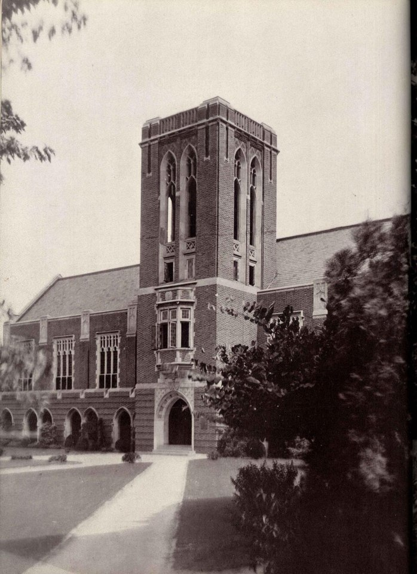
Brittain dining hall was build in 1928 by the architects Harold Bush‑Brown and James “Doc” Gailey.
Used today as one of the three dining halls on campus
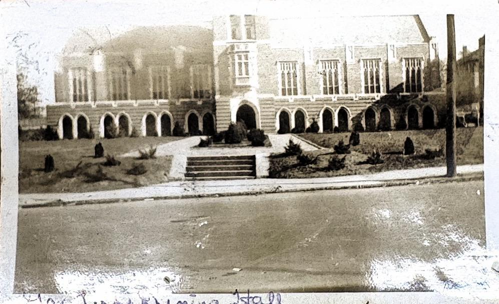
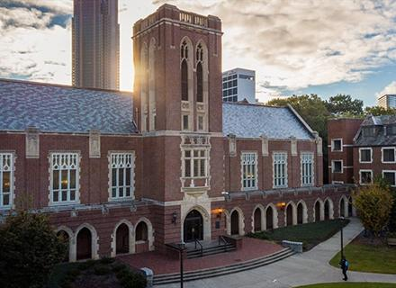
Clough, G. Wayne. “Dedication of Renovated Brittain Dining Hall Notes.” Georgia Institute of Technology, 19 Oct. 2001, https://hdl.handle.net/1853/20557
This source includes a speech given that describes the Brittain Dining Hall as a hub for student engagement and connection. It also addresses how the expansion of student housing on west campus had decreased the relevance of Brittain as a central meeting location. However, when it was renovated and the program the Freshman Experience was introduced, Brittain became recognized again as it was renovated to accommodate the changes to campus and student life. This source will be important for our digital story because it provides insight into why Brittain was renovated beyond the generic reason that it was an old building or had damage.
Most major renovations were during 1964 and 2024
The research document’s archival images are all included below. Select an image to view it at full size.
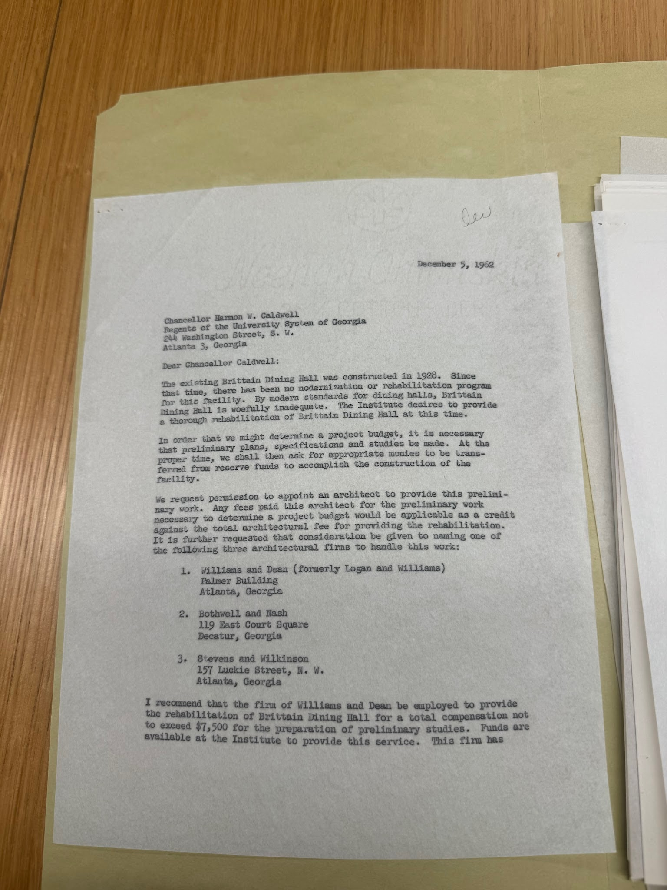
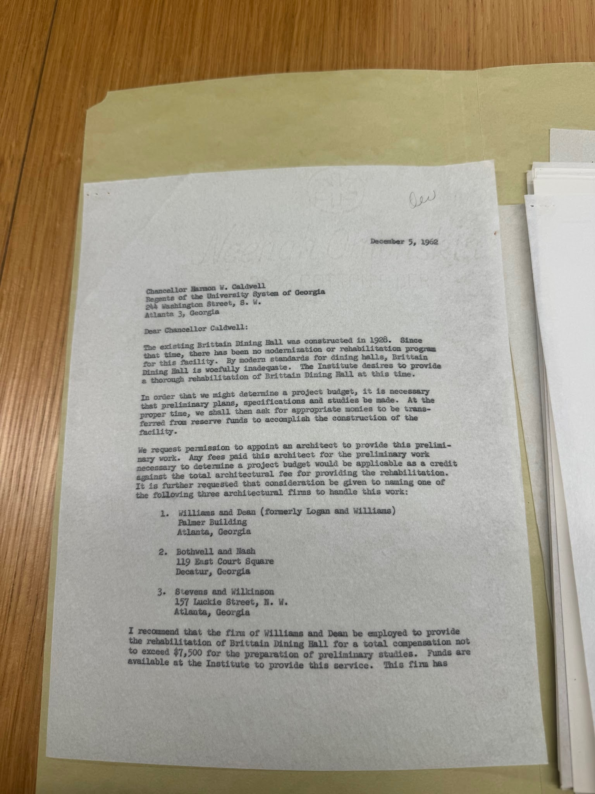
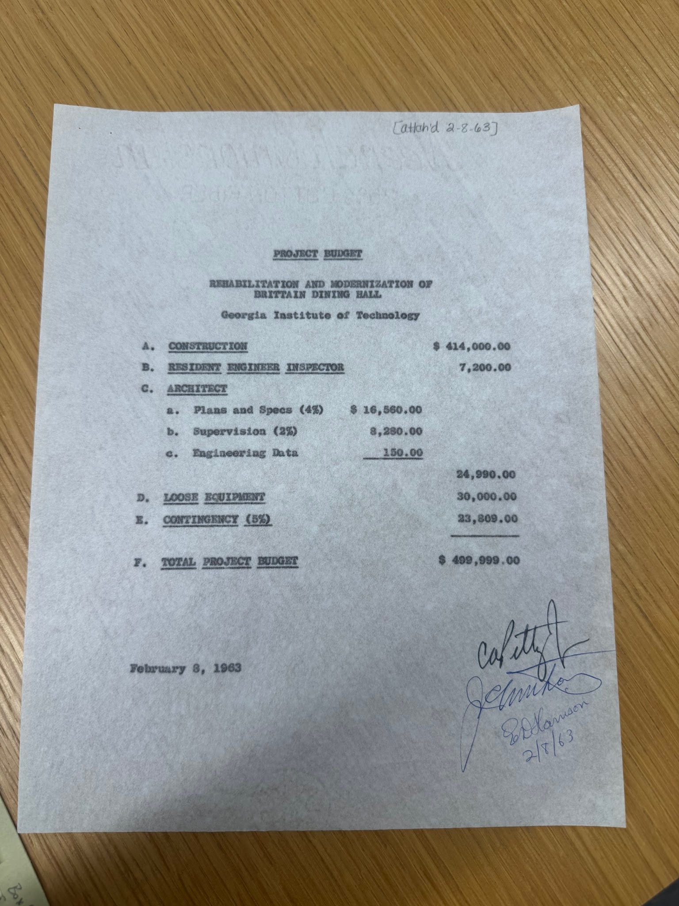
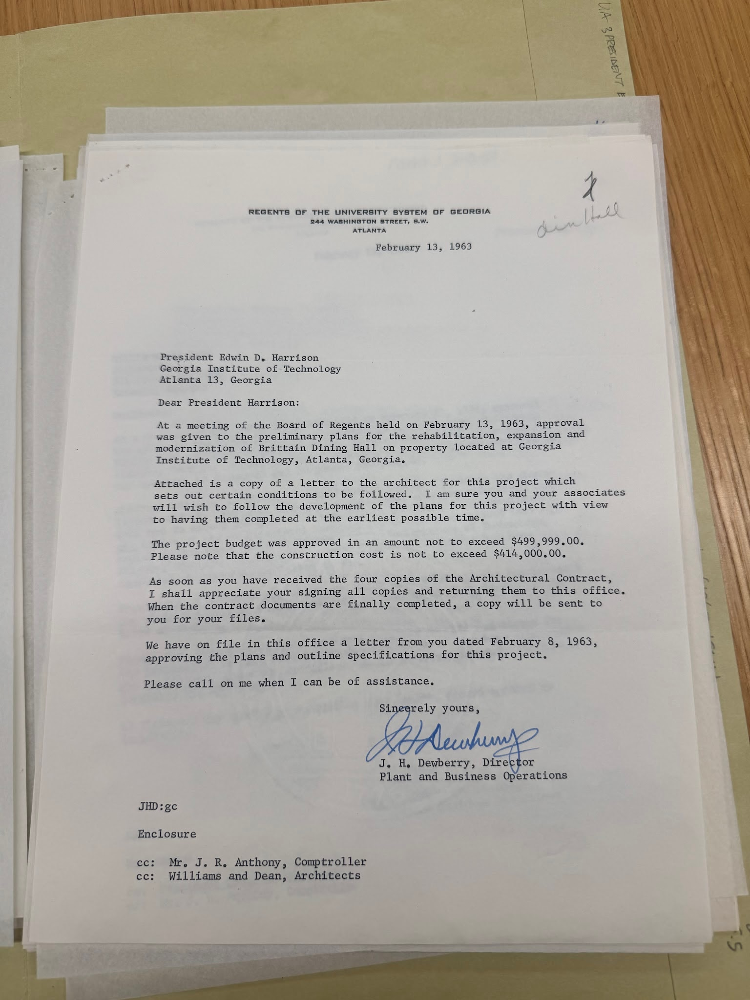
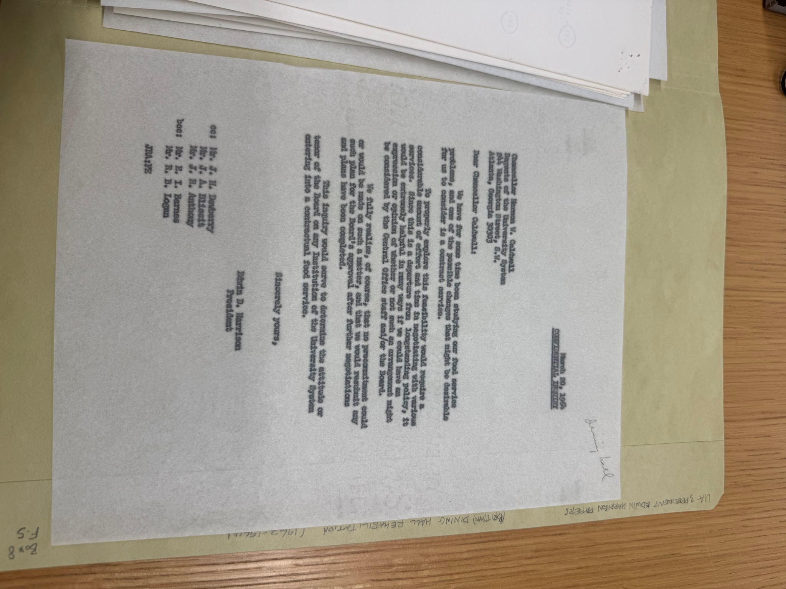
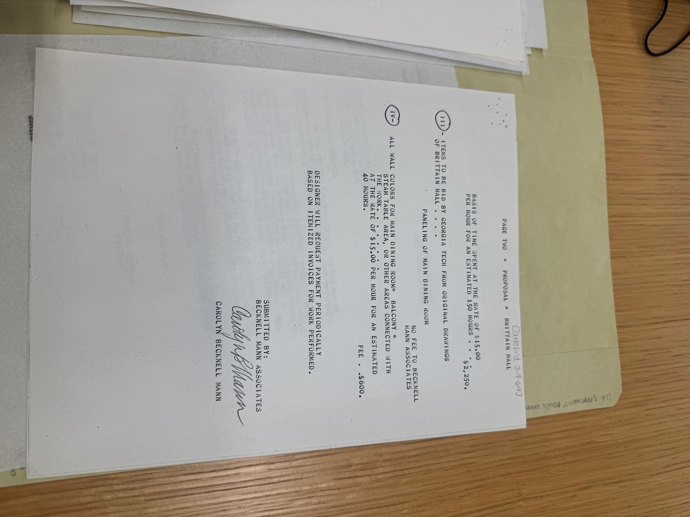
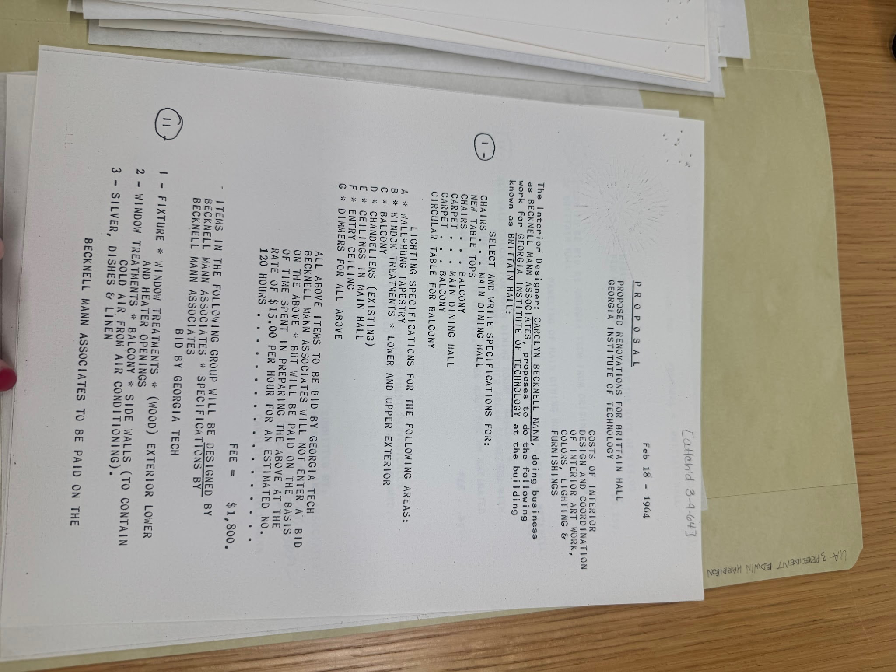
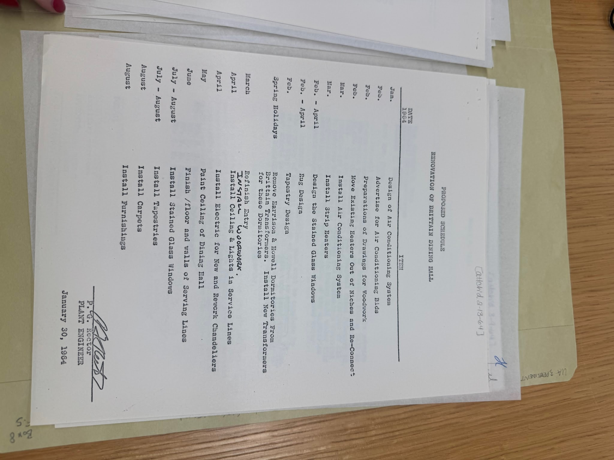
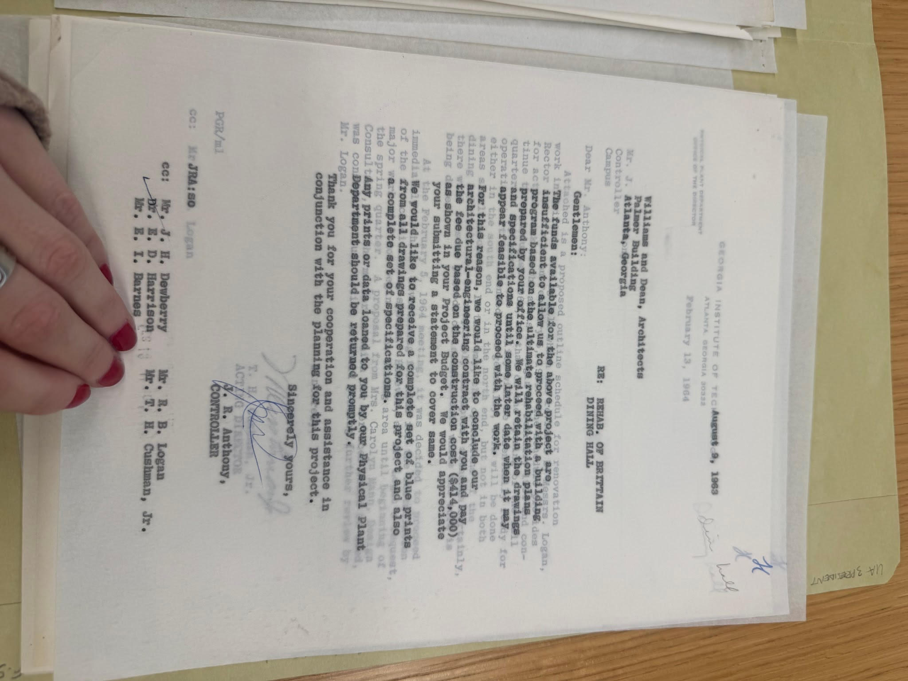
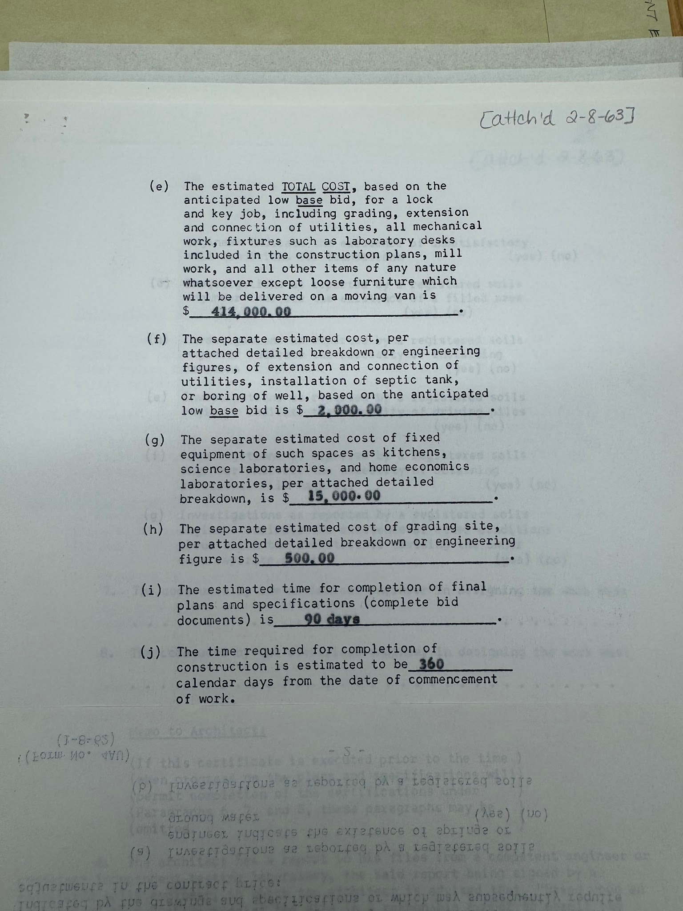
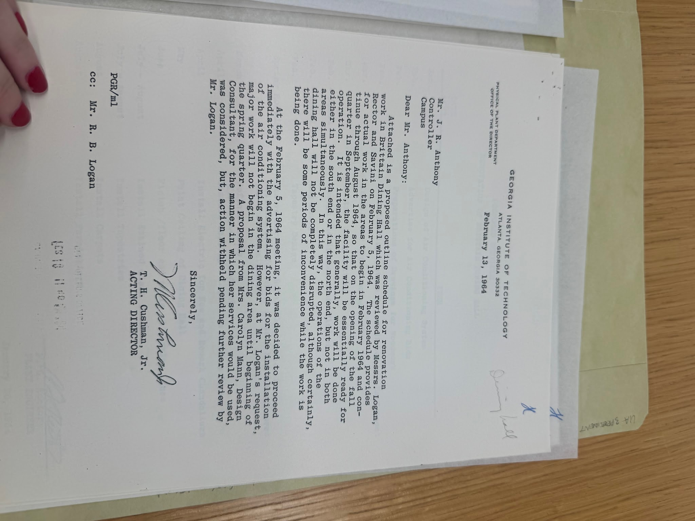